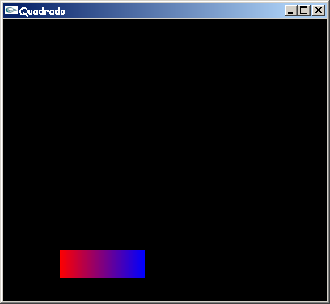

|
Introdução à OpenGL Professora Isabel Harb Manssour |
|
10. Transformações GeométricasAs transformações geométricas são usadas para manipular um modelo, isto é, através delas é possível mover, rotacionar ou alterar a escala de um objeto. A aparência final da cena ou do objeto depende muito da ordem na qual estas transformações são aplicadas. A biblioteca gráfica OpenGL é capaz de executar transformações de translação, escala e rotação através de uma multiplicação de matrizes. A idéia central destas transformações em OpenGL é que elas podem ser combinadas em uma única matriz, de tal maneira que várias transformações geométricas possam ser aplicadas através de uma única operação. Isto ocorre porque uma transformação geométrica em OpenGL é armazenada internamente em uma matriz. A cada transformação que é aplicada, esta matriz é alterada e usada para desenhar os objetos a partir daquele momento. A cada nova alteração é feita uma composição de matrizes. Para evitar este efeito "cumulativo", é necessário utilizar as funções glPushMatrix() e glPopMatrix(), que salvam e restauram, respectivamente, a matriz atual em uma pilha interna da OpenGL. A translação é feita através da função glTranslatef(Tx, Ty, Tz), que pode receber três números float ou double (glTranslated) como parâmetro. Neste caso, a matriz atual é multiplicada por uma matriz de translação baseada nos valores dados. A rotação é feita através da função glRotatef(Ângulo, x, y, z), que pode receber quatro números float ou double (glRotated) como parâmetro. Neste caso, a matriz atual é multiplicada por uma matriz de rotação de "Ângulo" graus ao redor do eixo definido pelo vetor "x,y,z" no sentido anti-horário. A escala é feita através da função glScalef(Ex, Ey, Ez), que pode receber três números float ou double (glScaled) como parâmetro. Neste caso, a matriz atual é multiplicada por uma matriz de escala baseada nos valores dados. Logo abaixo a função "Desenha" do exemplo do capítulo 8 é alterada para incluir as transformações geométricas de translação e escala. As funções glPushMatrix( ) e glPopMatrix( ) são usadas para que esta transformação não seja aplicada no modelo cada vez que ele é redesenhado [Wright 2000]. A figura 10.1 mostra como o quadrado é exibido após a aplicação das transformações especificadas. void Desenha(void)
{
glMatrixMode(GL_MODELVIEW);
glLoadIdentity();
glClear(GL_COLOR_BUFFER_BIT);
glColor3f(1.0f, 0.0f, 0.0f);
glTranslatef(-100.0f, -30.0f, 0.0f);
glScalef(1.5f, 0.5f, 1.0f);
glBegin(GL_QUADS);
glVertex2i(100,150);
glVertex2i(100,100);
// Especifica que a cor corrente é azul
glColor3f(0.0f, 0.0f, 1.0f);
glVertex2i(150,100);
glVertex2i(150,150);
glEnd();
glFlush();
}
 Figura 10.1 - Saída do programa Quadrado.c após a alteração da função "Desenha"
|